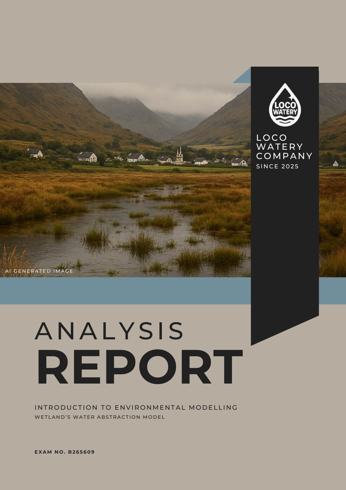

One interesting assignment I got this semester was to model and write a report about a wetland water abstraction, after running the model multiple times to find the "best" scenario for an imaginary company.
I genuinely enjoyed this environmental modelling course taught by Alistair Hamilton. He gave us the flexibility to come up with our own report concept, the freedom to choose which modelling software to use, and even decide what to deliver in our report. This kind of freedom really engaged my creativity and imagination.
In my report, I had fun creating a fictional storyline about the "Loco Watery Company", which aimed to extract water from "Loco Wetland" to meet the water demand in the surrounding area.
The Scenario Approach
Loco Watery, a fictional local water company in Scotland, sought to abstract water from the river feeding the Loco Wetland due to a shortage in the surrounding area. However, unsustainable levels of abstraction can impact the ecology and resilience of rivers, wetlands, and aquifers. The company must therefore submit a proposal to local government along with an impact assessment analysis.
I formulated three different scenarios to explore how much water abstraction could be done under varying conditions:
Short-term scenario — Exploring immediate water extraction potential with minimal ecological disruption.
Medium-term scenario — Balancing increased demand with sustainable abstraction rates over several years.
Long-term scenario — Assessing the wetland's resilience and carrying capacity under extended extraction.
Even though this wasn't a real-world project, it gave us valuable insight into how environmental modelling can be applied in practice — from setting up vegetation and water sub-models to validating results through statistical methods and time series analysis.
Oh and by the way! This was done during the "Ghibli Filter" hype, and I was curious to try out AI-generated images. So, you'll see quite a few AI-generated illustrations throughout the report — just for fun and aesthetic vibes.
